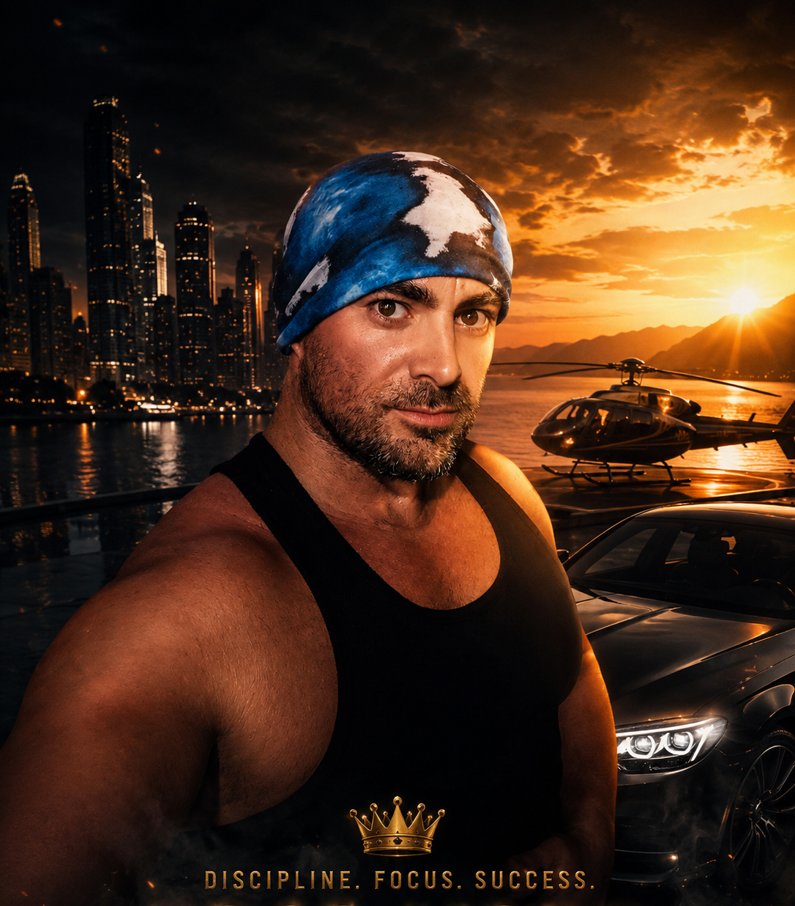

Hayatımın en büyük ihaneti, en büyük aldatılması ve en büyük düşmanlığıyla karşı karşıya kaldığımda, hayatımda en çok sevdiğim ve uğruna yaşadığım şeyin — çocuklarımla kurduğum bağın — sistematik ve düşmanca biçimde elimden alınmaya çalışıldığını gördüm.
Babalık haklarım olmasına rağmen çocuklarımdan bilinçli ve sistematik şekilde uzaklaştırıldım; görüşmem ve iletişim kurmam engellendi.
Bu süreç, benim için 5 Temmuz 2026'da, oğlumun doğum gününde ve çocuk tesliminden sonra yaşadığım ve benim tarafımdan bir öldürme girişimi olarak değerlendirilen olayla daha da ağır bir noktaya ulaştı.
O günden sonra hayatım değişti.
Artık önümde hiçbir engel olmadığını hissettim. Her gün daha güçlü olmak için çalışmaya başladım. Kendimi tamamen antrenmanıma, bedenime, zihnime ve gelişimime adadım.
Her gün bir önceki günden daha iyi olmak.
Ve bugün geriye baktığımda, yaşadığım her şeyin beni daha güçlü bir insan haline getirdiğini görüyorum.
125 kilogramdan 4 ay içerisinde 105 kilograma düştüm.
Hedefim net: 100 kilogram — yaklaşık 85 kilogram kas kütlesi — %15 yağ oranı.
Ama benim için mesele sadece kilo vermek veya kas yapmak değil.
Benim hedefim özgür bir hayat. Nerede ve ne zaman yaşayacağıma kendim karar verebildiğim, kendi hayatımın kontrolünü elimde tuttuğum, gereksiz kaygılardan ve başkalarının belirlediği sınırlardan uzak bir yaşam.
Bugün geçmişime öfkeyle değil, güçlenerek bakıyorum.
Bana zarar vermek isteyenler bile farkında olmadan beni daha güçlü, daha dayanıklı ve daha kararlı bir insan haline getirdi.
Onlara teşekkür etmiyorum. Ama bana verdikleri şeyi kullanıyorum: daha güçlü bir hayat kurma motivasyonunu.
Antrenman, güç gelişimi, disiplin ve daha güçlü bir beden için yol haritası.
Hedeflerine uygun, sürdürülebilir beslenme alışkanlıkları ve günlük düzen.
Sadece vücudunu değil, yaşam tarzını ve zihinsel disiplinini de geliştirmeye odaklan.
Hedef belirleme, disiplin, öz gelişim ve kendi yolunu oluşturma konusunda rehberlik.
Her gün dünden daha iyi olmak. Daha güçlü, daha dayanıklı ve daha özgüvenli bir sen.
Kendi hayatının kontrolünü eline almak ve sana uygun daha özgür bir yaşam kurmak.
Daha güçlü bir beden.
Daha güçlü bir zihin.
Daha fazla özgürlük.
Kendi hayatının kontrolünü yeniden eline almak.
O zaman benimle iletişime geç.
Ben sadece sana antrenman programı hazırlayan bir fitness koçu değilim. Yaşam koçu ve mentor olarak da sana eşlik ediyorum.
Fitness, beslenme, disiplin, kişisel gelişim ve yaşam tarzı konusunda kendini geliştirmenin yanında, hayatındaki “koşu bandından” çıkman, kendi hedeflerini belirlemen ve istediğin özgür hayata doğru ilerlemen için sana yol göstermek istiyorum.
Değişmeye, güçlenmeye ve kendi istediğin hayatı kurmaya hazırsan bana ulaş.